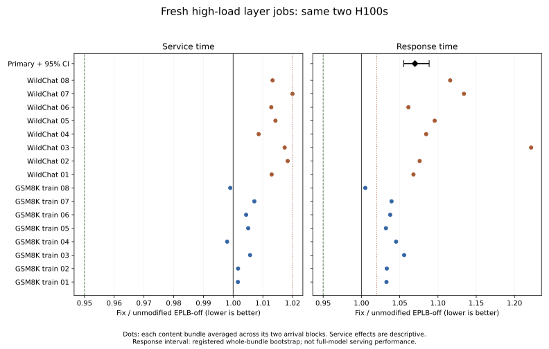

Fresh primary response time was worse than EPLB-off; the registered 95% interval lies above parity. The overall acceptance criteria did not pass.
Fresh primary mean-response ratio: 1.0700 (fix / EPLB-off), registered 95% CI [1.0554, 1.0885]. Ratios below 1 favor the fix. The useful-gain requirement was an upper bound below 0.95.
On four previously observed pilot groups, exact physical-ID replay reduced service by about 29.55 µs/job. It preserved actual gate/top-k, combining weights and physical assignments while excluding online selection. The online method was 17.53 µs slower than EPLB-off; replay was 12.02 µs faster. This is a selector-invocation and buffer/cache intervention, not exclusive GPU kernel time or a universal bound on available execution savings.
The implemented fix binds the existing compiled Triton selector once and reuses that launcher. Previous and fix use the same pinned int32/int64 selector GPU binaries. Routing policy, validation, resident placement and native expert kernels remain unchanged. Host submission elapsed fell from approximately 22 to 11.5 µs in an isolated diagnostic that excludes the subsequent completion wait; whole-job development service improved by about 7 µs. Development still lost to EPLB-off in all four groups, and two groups regressed against the previous method. Those results were retained before the fresh study.
A separately tested safe reduction of empty expert-kernel launch positions made service worse by about 6.7 µs after charging its adapter costs. Removing mapper input checks had no consistent benefit. Neither was selected.
| Metric | Previous vs EPLB-off | Fix vs EPLB-off | Fix vs previous |
|---|---|---|---|
| Mean response | +25.38% | +7.00% | -14.66% |
| p95 response | +26.62% | +8.15% | -14.58% |
| Mean service | +2.56% | +0.87% | -1.65% |
| Mean queue delay | +28.68% | +7.95% | -16.11% |
| Completed elapsed | +0.05% | +0.00% | -0.04% |
| Finite-episode throughput | -0.05% | -0.00% | +0.04% |
| Arm | Response ms | p95 ms | Service ms | Queue ms | Completed s | Drain ms | Jobs/s |
|---|---|---|---|---|---|---|---|
| stockoff | 5.757 | 17.422 | 0.733 | 5.024 | 3.561 | 3.327 | 1150.690 |
| previous | 7.603 | 22.881 | 0.751 | 6.851 | 3.562 | 4.965 | 1150.154 |
| fix | 6.188 | 18.843 | 0.739 | 5.449 | 3.561 | 3.450 | 1150.650 |
Absolute values are arithmetic means across complete high-load runs; p95 is the mean of run-level p95s, not a pooled-job percentile.
Changes above are geometric paired ratios, equally weighted across content groups and the two datasets. Throughput is finite-episode throughput, not saturated capacity. The secondary fix/previous response result is not_tested_gate_closed; its point comparison is descriptive when the primary gate is closed.

6/10 registered guards passed. Date sensitivity: FAIL. Overall decision: do_not_advance.
| Guard | Point ratio | One-sided 99.5% upper | 2% guard |
|---|---|---|---|
| stockoff_gsm8k_train_rho0.5_mean_response | 0.9976 | 1.0029 | PASS |
| stockoff_gsm8k_train_rho0.85_mean_response | 1.0350 | 1.0461 | FAIL |
| stockoff_wildchat_rho0.5_mean_response | 1.0193 | 1.0274 | FAIL |
| stockoff_wildchat_rho0.85_mean_response | 1.1061 | 1.1574 | FAIL |
| stockoff_high_load_p95_response | 1.0815 | 1.1119 | FAIL |
| previous_gsm8k_train_rho0.5_mean_response | 0.9752 | 0.9799 | PASS |
| previous_gsm8k_train_rho0.85_mean_response | 0.8362 | 0.8938 | PASS |
| previous_wildchat_rho0.5_mean_response | 0.9774 | 0.9805 | PASS |
| previous_wildchat_rho0.85_mean_response | 0.8710 | 0.9224 | PASS |
| previous_high_load_p95_response | 0.8542 | 0.8978 | PASS |
| Content | Arrival type | Offered load | Contrast | Mean response change | p95 response change |
|---|---|---|---|---|---|
| gsm8k_train | code | 0.5 | fix_over_stockoff | -0.56% | -0.84% |
| gsm8k_train | code | 0.5 | fix_over_previous | -2.55% | -2.94% |
| gsm8k_train | code | 0.5 | previous_over_stockoff | +2.05% | +2.17% |
| gsm8k_train | code | 0.85 | fix_over_stockoff | +1.14% | +2.95% |
| gsm8k_train | code | 0.85 | fix_over_previous | -15.49% | -13.02% |
| gsm8k_train | code | 0.85 | previous_over_stockoff | +19.68% | +18.36% |
| gsm8k_train | conversation | 0.5 | fix_over_stockoff | +0.07% | -0.03% |
| gsm8k_train | conversation | 0.5 | fix_over_previous | -2.42% | -2.64% |
| gsm8k_train | conversation | 0.5 | previous_over_stockoff | +2.55% | +2.68% |
| gsm8k_train | conversation | 0.85 | fix_over_stockoff | +5.93% | +7.68% |
| gsm8k_train | conversation | 0.85 | fix_over_previous | -17.27% | -18.89% |
| gsm8k_train | conversation | 0.85 | previous_over_stockoff | +28.03% | +32.75% |
| wildchat | code | 0.5 | fix_over_stockoff | +2.01% | +2.36% |
| wildchat | code | 0.5 | fix_over_previous | -2.40% | -2.93% |
| wildchat | code | 0.5 | previous_over_stockoff | +4.52% | +5.45% |
| wildchat | code | 0.85 | fix_over_stockoff | +12.61% | +14.50% |
| wildchat | code | 0.85 | fix_over_previous | -17.26% | -15.85% |
| wildchat | code | 0.85 | previous_over_stockoff | +36.10% | +36.07% |
| wildchat | conversation | 0.5 | fix_over_stockoff | +1.84% | +1.86% |
| wildchat | conversation | 0.5 | fix_over_previous | -2.11% | -2.34% |
| wildchat | conversation | 0.5 | previous_over_stockoff | +4.04% | +4.30% |
| wildchat | conversation | 0.85 | fix_over_stockoff | +8.66% | +7.80% |
| wildchat | conversation | 0.85 | fix_over_previous | -8.31% | -10.32% |
| wildchat | conversation | 0.85 | previous_over_stockoff | +18.50% | +20.21% |
Date-deletion sensitivity versus EPLB-off: [1.0554323114434565, 1.0852611608062692]; versus previous: [0.8355558030329067, 0.8669253550231908]. These are linked-date point sensitivities, not fresh-day confidence intervals.
One pinned Qwen3-30B-A3B MoE layer (layer 0, BF16, B128, top-8), the exact reserved two H100 94 GB GPUs on kh014, fixed 160-slot resident placement and a maximum 32-replica allowance. EPLB-off uses 128 slots. Inputs are replicated and outputs use native all-reduce; this does not test token all-to-all or full-model serving.
The launcher repair targets eager submission overhead. Graph-enabled full-model serving may already amortize some of that work; it was not tested here.
There are 192 final treatments: 16 source-disjoint content bundles treated as bootstrap units, each paired across two external arrival blocks, two loads and three contemporaneous arms. The final bundles contain 512 new-to-this-experiment documents (GSM8K training split and WildChat). A separate 128-document pilot, 20 native-only calibrations, 56 reused-input diagnostics and 24 development treatments bring the measured budget to 340 executions. No test-set freshness or independence from model training is claimed.
Each batch is assembled from captured prompt-prefill hidden states; real native routes are computed inside every forward. No autoregressive continuation tokens are generated. Azure timestamps drive layer jobs, not actual original requests; content and arrivals are independently paired. Absolute arrivals remain fixed under overload and every job drains. Setup, capture, conditioning and untimed correctness probes are excluded; online dispatch, native computation, synchronization, coordinator ACKs and completion tails are included in the declared service/episode boundaries.
The 100,000-draw bootstrap resamples complete content bundles within datasets, retaining both arrival types, loads and all arms. It is conditional on this trace material and allocation. The 5% useful-gain criterion, ten 2% regression guards and actual-date sensitivity rule were frozen before fresh performance measurement.
The capture audit authenticated 640 documents and 57,474 token records. Full prepared-input checks compare all 4,112 batches per group against native EPLB-off, with 64 selected FP32 reference positions and 16 full postflight batches per trial. Separately implemented same-team audits reconstruct physical assignments, routing/combining weights, native geometry, clocks, committed state and registered statistics. These are bounded numerical checks and same-team independent implementations, not an external laboratory replication.
Frozen implementation commit: fbae52ae021d0571bfd2b8f53b66f41303007b54. The 107-file source closure is 136259a52849be38f9dc875f6ccef964ba2c92f8cd53ceee2c5e5c51f2e0dce7. Earlier 83 frozen files and prior negative results remain unchanged.
Source, raw records and reproduction procedure in cs471. Run python docs/resident-residual/reproduce.py --output /absolute/fresh/output from a clean checkout for CPU reanalysis. Authentic GPU recapture requires the pinned public source material, checkpoint and matching environment; see the repository's recapture recipe.